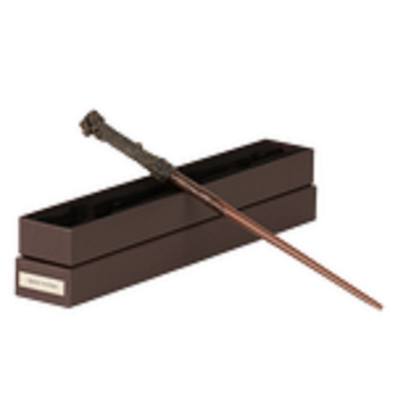
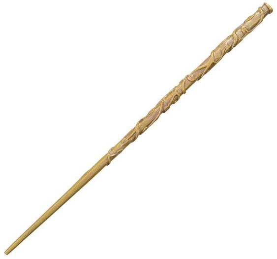
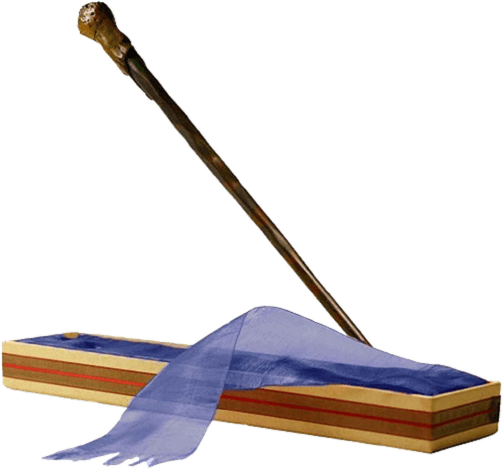

La Varita Escoge al Mago
Valor: 100.000$
Valor: 100.000$
Valor: 100.000$

|  |
La varita de Harry Potter mide veintiocho centímetros, y está hecha
de acebo, con una pluma de fénix en su centro. Ésta fue donada por
Fawkes, mascota de Albus Dumbledore.
Valor: 100.000$ |
|  |
La varita de Hermione Granger, estaba hecha de vid, con núcleo de
fibra de corazón de dragón y medía 103/4 pulgadas (27,3 cm). Se
caracterizaba por ser flexible y buena para realizar hechizos. La
varita fue fabricada por Garrick Ollivander en algún momento antes
de la educación de Hermione en Colegio Hogwarts de Magia y
Hechiceria.
Valor: 100.000$ |
|  |
La Segunda varita de Ron Weasley era de madera de sauce, núcleo de
Pelo de Unicornio y medía 36 centímetros.La varita fue fabricada por
Garrick Ollivander. Fue comprada en 1993 con parte del dinero que el
padre de Ron ganó en un sorteo del profeta. Esta varita parecía
adaptarse a Ron mejor que su primera varita, que había heredado de
su hermano mayor, Charlie Weasley.
Valor: 100.000$ |
|
|
|